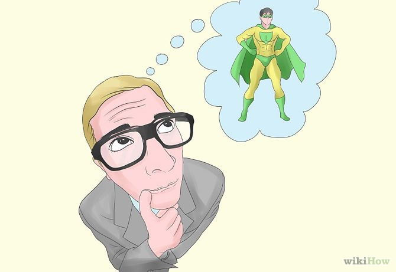
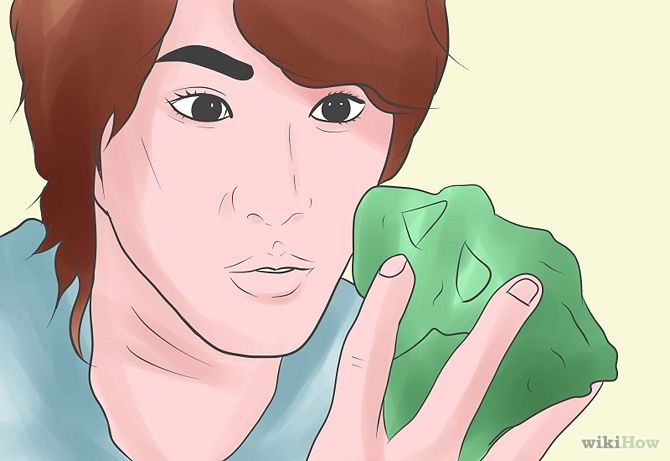
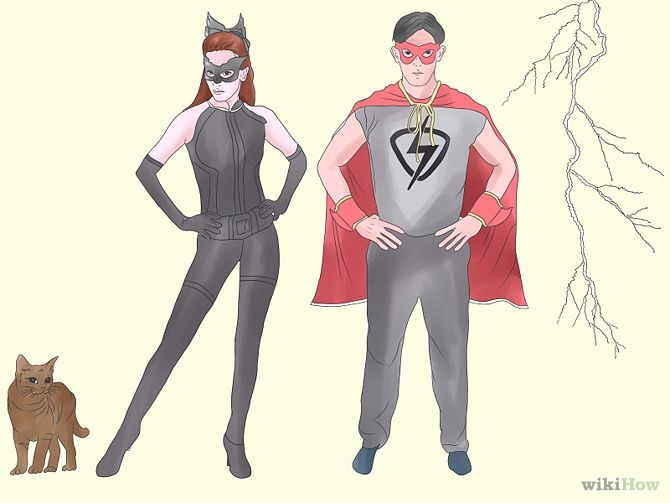

How to Become a Real Life Superhero
Part 1 of 4: Getting Your Story Down
-
Choose your superpowers. Keep in mind that these powers will help determine everything else about you. If you choose powers like super crocheting or making everything sparkly, you'll inevitably be making your costume out of glitter and grandma's favorite afghan. So what will you be doing with your crime-stopping time?
- Think of any talents you have that you've ever impressed people with. It could be something as classic as playing the piano, as random as making origami aliens, or as goofy as being able to touch your tongue to your nose.
- No talents? No problem. Create your superpower(s). Learn something unique, like ripping a phone book in half or other body tricks.
Part 2 of 4: Think of what you want to look like.
-

If you are merely using a superhero persona to feed the homeless (certainly a heroic deed), you may not need to follow all of these steps. However, if you are intent on stopping street crime as a supplement to law enforcement, you need to address the situation of becoming a superhero carefully. What will your story and motivation be?
- For the purposes of this article, we'll go the full nine yards -- cape and all. But know that you can be a real life superhero just by helping people. Do you want to patrol the streets for stray cats? Do you want to swoop in on people committing tax fraud? What's your penchant for?
Part 3 of 4: Choose your weakness.
-

- Every superhero needs one. It sucks, but it's in the job description. It's not fair if you don't. Luckily for you, if you pick something like Kryptonite you won't run into it very often.
Part 4 of 4: Pick a name.
-

This is going to be one of the most important tidbits about your persona. Imagine your name in lights. Does "Gregarious Greg" really have the ring to it you want (you can do better than that!)? Is "Looks Good in Yellow Girl" doing yourself justice? How do you want to be remembered? How does it match your powers?
- Think about what you have at your disposal. "Electron Disseminating Man" is going to be a little hard to pull off if the only tools you have in your basement are an Xbox and an iPod. "Cat Catfinder" is doable. And if you're stopping tax fraud, something like "Axle the Tax Alerter" might please the press.